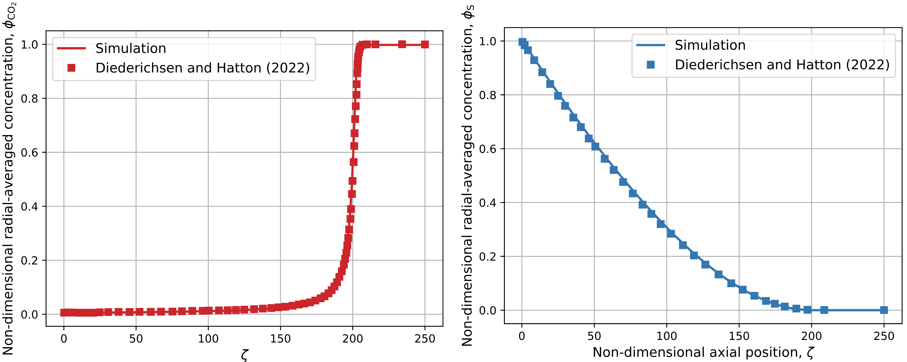
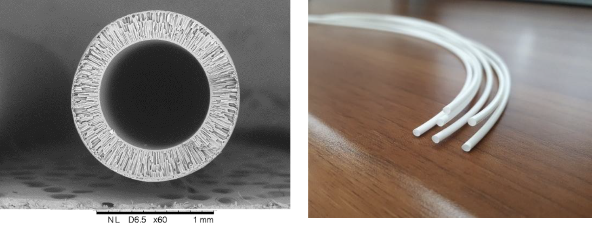
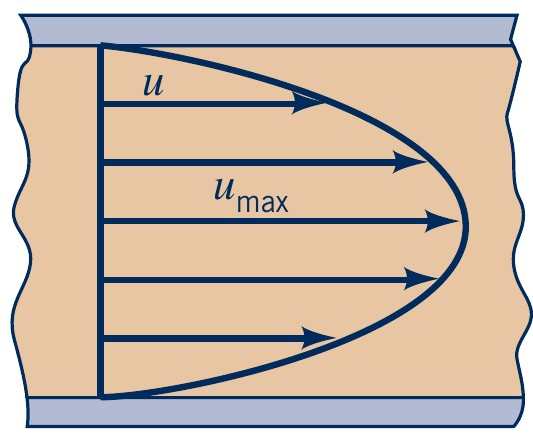
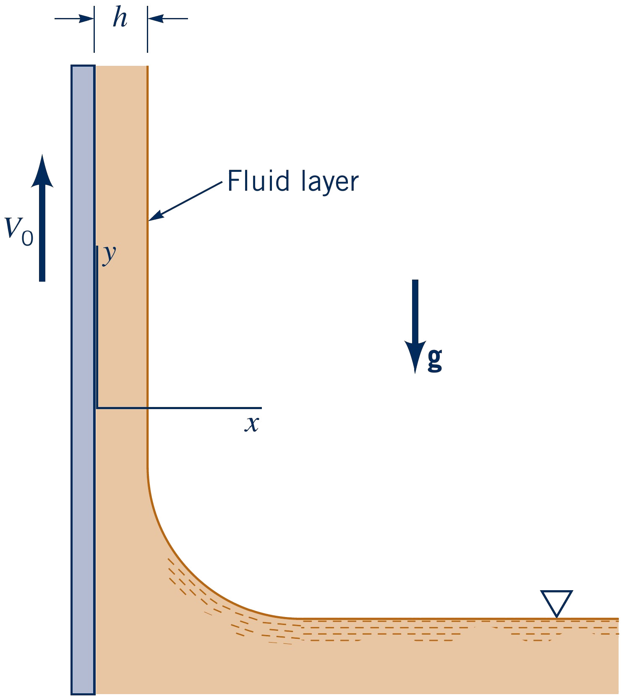

Fluid Mechanics
Analytical solutions for simple fluid flows
Lecturer: Jakob Hærvig
Slides by Jakob Hærvig (AAU Energy) and Jacob Andersen (AAU Build)
Complexities involved in Navier-Stokes equations
No universal analytical solution due to non-linearities ($\partial u/\partial x$)
- Solution approximated using numerical methods (e.g. CFD)
- Solution found by experiments
Analytical solutions for only a few problems
- Simple geometries: Flow between two plates or in a tube
- Simple flows: Steady, laminar and fully-developed flows
Why look at these simplified problems?
Current research uses Poiseuille flow for verification of CFD
CO$_2$ diffuses into the fiber and is captured
- Really (!) long fibres ($ l/D\approx12000$)
- Steady, laminar, fully-developed flow is a very good assumption
- Prescribed boundary condition
Results: Code verification results
Figure: Hollow fibre membrane
Bazhenov, S. D., Bildyukevich, A. V., & Volkov, A. V. (2018). Gas-Liquid Hollow Fiber Membrane Contactors for Different Applications. Fibers, 6(4), 76. https://doi.org/10.3390/fib6040076
Code: Inlet boundary condition in OpenFOAM
/*--------------------------------*- C++ -*----------------------------------*\
========= |
\\ / F ield | OpenFOAM: The Open Source CFD Toolbox
\\ / O peration | Website: https://openfoam.com
\\ / A nd | Version: 2506
\\/ M anipulation |
\*---------------------------------------------------------------------------*/
FoamFile
{
format ascii;
class volVectorField;
location "0";
object U;
}
// * * * * * * * * * * * * * * * * * * * * * * * * * * * * * * * * * * * * * //
dimensions [0 1 -1 0 0 0 0];
internalField uniform (0 0 0);
boundaryField
{
inlet
{
type codedFixedValue;
value $internalField; // dummy, gets overwritten by code
name parabolicInlet;
code
#{
const scalar Uavg = 3.84e-05; // Max velocity
const vectorField& faceCentres = patch().Cf();
static bool firstTime = true;
static scalar R = -GREAT;
vectorField& field = *this;
if (firstTime)
{
const pointField& points = patch().patch().points();
forAll(points, i)
{
R = max(R, points[i].x());
}
firstTime = false;
}
forAll(field, i)
{
scalar x = faceCentres[i].x();
scalar z = faceCentres[i].z();
scalar r = sqrt(x*x + z*z);
scalar Uy = 2*Uavg * (1.0 - r*r/R/R);
field[i] = vector(0, Uy, 0);
}
#};
}
upper_inner
{
type zeroGradient;
value $internalField;
}
farfield
{
type fixedValue;
value uniform (0 0 0);
}
"wedge.*"
{
type wedge;
}
}
// ************************************************************************* //
Flow between plates
Steady, fully developed, laminar flow between two infinite plates
- Velocity only in $x$-direction:
- then, $u=u(y)$, $v=w=0$
- Steady flow:
- then, $\partial u/\partial t = \partial v/\partial t = \partial w/\partial t = 0$
- By continuity equation: $\partial u/\partial x + \partial v/\partial y + \partial w/\partial z = 0$
- then, $\partial u/\partial x=0$
- No gravity in $x$ and $z$ directions:
- then, $g_x = g_z = 0$
Navier-Stokes equations reduce to:
$x:~$\( 0 = -\dfrac{\partial p}{\partial x} + \mu \dfrac{\partial^2 u}{\partial y^2}\),$~~~y:~$\( 0 = -\dfrac{\partial p}{\partial y} + \rho g_y \),$~~~z:~$\( 0 = -\dfrac{\partial p}{\partial z}\)
$x$-direction:
\( \rho \)
\( \bigg( \)
\( \dfrac{\partial u}{\partial t} \)
\( + \)
\( u \dfrac{\partial u}{\partial x} \)
$y$-direction:
\( \rho \)
\( \bigg( \)
\( \dfrac{\partial v}{\partial t} \)
\( + \)
\( u \dfrac{\partial v}{\partial x} \)
$z$-direction:
\( \rho \)
\( \bigg( \)
\( \dfrac{\partial w}{\partial t} \)
\( + \)
\( u \dfrac{\partial w}{\partial x} \)
Flow between two stationary plates
Integrating twice to get \( u(y)\):
\( \dfrac{\partial^2 u}{\partial y^2} = \dfrac{1}{\mu} \dfrac{\partial p}{\partial x} \)
\(\dfrac{\partial u}{\partial y} = \dfrac{1}{\mu} \dfrac{\partial p}{\partial x} y + C_1 \)
\( u = \dfrac{1}{2\mu} \dfrac{\partial p}{\partial x} y^2 + C_1 y + C_2 \)
Using boundary conditions:
At $y=\pm h~$ we have \( u = 0\)
\( C_1 = 0 \), \( C_2 = -\dfrac{1}{2\mu} \dfrac{\partial p}{\partial x} h^2 \)
Velocity profile (by inserting $C_1$ and $C_2$):
\( u(y) = \dfrac{1}{2\mu} \dfrac{\partial p}{\partial x} (y^2 - h^2) \)
Volume flow rate (integrating velocity profile):
\( q = \int^h_{-h} u(y) = -\dfrac{2 h^3}{3\mu} \left(\dfrac{\partial p}{\partial x}\right) \)
Average velocity:
\( V = \dfrac{q}{2h} = -\dfrac{h^2}{3\mu} \left(\dfrac{\partial p}{\partial x}\right) \)
Maximum velocity (centre of channel, \(y=0\)):
\( u_{max} = u(y=0)=-\dfrac{h^2}{2\mu} \left(\dfrac{\partial p}{\partial x}\right) = \dfrac{3}{2} V \)
Flow between one stationary and one moving plate (aka Couette flow)
Integrating twice to get \( u(y)\):
\( \dfrac{\partial^2 u}{\partial y^2} = \dfrac{1}{\mu} \dfrac{\partial p}{\partial x} \)
\(\dfrac{\partial u}{\partial y} = \dfrac{1}{\mu} \dfrac{\partial p}{\partial x} y + C_1 \)
\( u = \dfrac{1}{2\mu} \dfrac{\partial p}{\partial x} y^2 + C_1 y + C_2 \)
Using boundary conditions:
At $y=0~$ we have \( u = 0\)
At $y=b~$ we have \( u = U\)
Finding $C_1$ and $C_2$ and inserting:
\( u(y) = U \dfrac{y}{b} + \dfrac{1}{2\mu} \dfrac{\partial p}{\partial x} (y^2 - by) \)

\( P = -\dfrac{b^2}{2\mu U} \left( \dfrac{\partial p}{\partial x} \right) \)
Flow in a circular pipe (aka Poiseuille flow)
Steady, fully developed, laminar flow in a circular pipe
- Velocity only in $z$-direction:
- then, $v_z = v_z(r)$, $v_\theta=v_r=0$
- Steady flow:
- then, $\partial u/\partial t = \partial v/\partial t = \partial w/\partial t = 0$
- By continuity equation: $\dfrac{1}{r}\dfrac{\partial (r v_r)}{\partial r} + \dfrac{1}{r} \dfrac{\partial v_\theta}{\partial \theta} + \dfrac{\partial v_z}{\partial z} = 0$
- then, $\partial v_z/\partial z=0$
- No gravity in $z$ direction:
- then, $g_z 0$
Navier-Stokes equations reduce to:
$z:~$\( 0 = -\dfrac{\partial p}{\partial z} + \mu \dfrac{1}{r}\dfrac{\partial}{\partial r} \left(r \dfrac{\partial v_z}{\partial r} \right)\),$~~~r:~$\( 0 = \rho g_r - \dfrac{\partial p}{\partial r} \),$~~~\theta:~$\( 0 = \rho g_\theta -\dfrac{\partial p}{\partial \theta}\)
Integration, applying boundary condtions and find $C_1$ and $C_2$:
\( v_z(r) = \dfrac{1}{4\mu}-\left(\dfrac{\partial p}{\partial z}\right)\left(r^2-R^2\right)\)
- Velocity is a function of viscosity $\mu$, pressure gradient $\partial p/ \partial z$ and pipe radius $R$.
$z$-direction:
\( \rho \)
\( \bigg( \)
\( \dfrac{\partial v_z}{\partial t} \)
\( + \)
\( v_r \dfrac{\partial v_z}{\partial r} \)
$r$-direction:
\( \rho \)
\( \bigg( \)
\( \dfrac{\partial v_r}{\partial t} \)
\( + \)
\( v_r \dfrac{\partial v_r}{\partial r} \)
$\theta$-direction:
\( \rho \)
\( \bigg( \)
\( \dfrac{\partial v_\theta}{\partial t} \)
\( + \)
\( v_r \dfrac{\partial v_\theta}{\partial r} \)
Details on flow in circular pipes (aka Poiseuille flow)
- Volume flow rate (integrate velocity):
- Flow rate is a function of viscosity $\mu$, pressure gradient $\partial p/ \partial z$ and pipe radius $R$.
- Average velocity (divide by area):
- Mean velocity is a function of viscosity $\mu$, pressure gradient $\partial p/ \partial z$ and pipe radius $R$.
- Maximum velocity ($r=0$):
- Mean velocity is a function of viscosity $\mu$, pressure gradient $\partial p/ \partial z$ and pipe radius $R$.
$$ Q = 2\pi \int_0^R v_z(r) r dr = -\dfrac{\pi R^4}{8\mu} \left(\dfrac{\partial p}{\partial z}\right) = \dfrac{\pi R^4 \Delta p}{8\mu l}$$
$$ V = \dfrac{Q}{A} = \dfrac{-\dfrac{\pi R^4}{8\mu} \left(\dfrac{\partial p}{\partial z}\right)}{\pi R^2} = -\dfrac{R^2}{8\mu} \left(\dfrac{\partial p}{\partial z}\right) = \dfrac{R^2 \Delta p}{8\mu l}$$
$$ v_z(r=0) = \dfrac{1}{4\mu}-\left(\dfrac{\partial p}{\partial z}\right)(0^2-R^2)=-\dfrac{R^2}{4\mu} \left(\dfrac{\partial p}{\partial z}\right) = \dfrac{R^2 \Delta p}{4\mu l}$$
- Ratio of centerline to mean velocity ($v_z(r=0)/V$):
- Centerline velocity is exactly twice the mean velocity.
$$ \dfrac{v_z(r=0)}{V} = \dfrac{\dfrac{R^2 \Delta p}{4\mu l}}{\dfrac{R^2 \Delta p}{8\mu l}} = 2$$
Exercise: Upward moving fluid film
A wide moving belt passes through a container of a viscous liquid. The belt moves vertically upward with a constant velocity, $V_0$, as illustrated in the figure. Because of viscous forces the belt picks up a film of fluid of thickness $h$. Gravity tends to make the fluid drain down the belt. Assume that the flow is laminar, steady, and fully developed.
